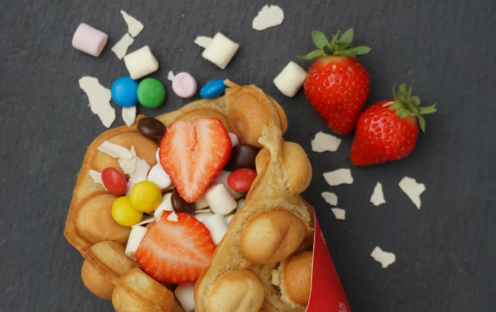
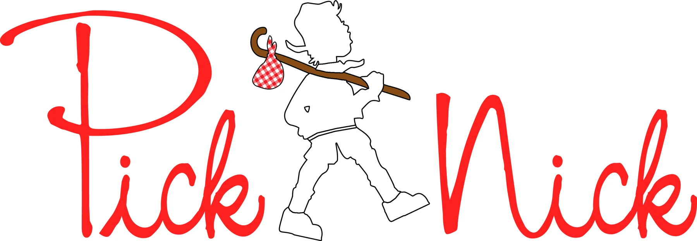
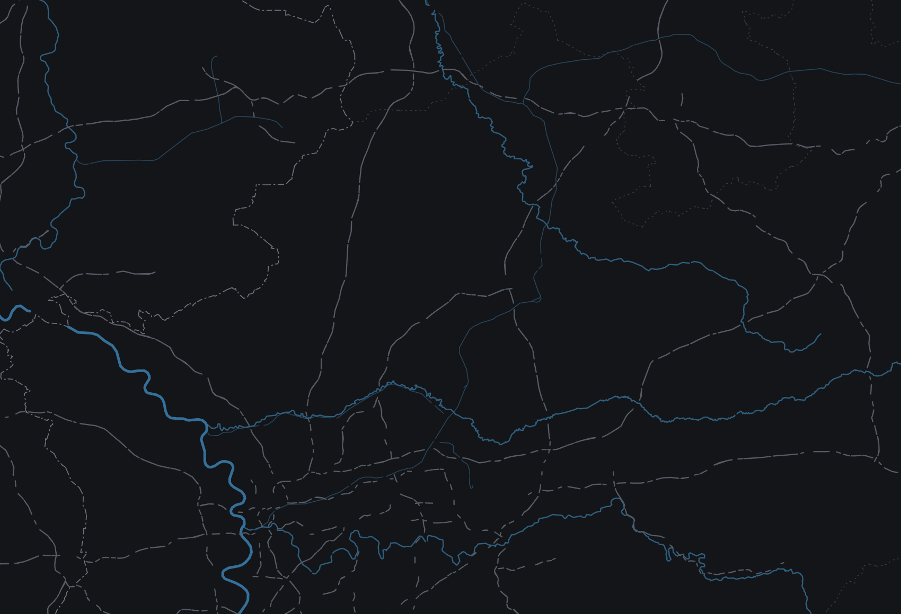

Dachgeschoss · Die Dachmarke aus Ochtrup
Genussmanufaktur
Ein Dach.
Vier Welten.
Unter diesem Dach wohnt auf jeder Etage eine Marke. Fahr mit dem Aufzug nach unten.
↓Abwärts
 Frozen Yogurt, Bubble Waffles und Açaí-Bowls. Frisch gemacht, da wo gebummelt wird.Eintreten →
3. Etage
Frozen Yogurt, Bubble Waffles und Açaí-Bowls. Frisch gemacht, da wo gebummelt wird.Eintreten →
3. Etage

Kaffeespezialitäten, belegte Brötchen und Waffeln. Die kleine Pause beim Einkaufen.Eintreten → 2. Etage Bowls, Wraps und Porridge. Zusammengestellt, wie du es magst.Eintreten →
1. Etage
Bowls, Wraps und Porridge. Zusammengestellt, wie du es magst.Eintreten →
1. Etage

Bald. Hier zieht etwas Neues ein.
Das Dach über allem
Aus der Modezum Genuss.
Christian Kötterheinrich kam aus der Modebranche. Bei einer Studie über Passform stieß er auf eine Erkenntnis, die nichts mit Stoff zu tun hatte: Einkaufen und Genießen gehören zusammen. 2011 gründete er in Ochtrup die Genussmanufaktur. Seitdem entstehen Orte zum Verweilen, dort, wo Menschen einkaufen, bummeln und sich etwas gönnen.
- 2012Retailer-Award der ECE für das innovativste Konzept
- 2013Store of the Year des Handelsverbands HDE
- 2014Nominierung Bahnhofsshop des Jahres der Deutschen Bahn
Standorte
Hier findestdu uns.
Vom Ruhrgebiet bis Osnabrück. Tipp auf einen Ort und sieh, welche unserer Marken dort auf dich warten.

Münster Enschede Rheine Dortmund Essen Duisburg Hamm Bielefeld Niederlande Niedersachsen Nordrhein-Westfalen Kartendaten © OpenStreetMap-MitwirkendeJobs
Gastgebergesucht.
Wir suchen Menschen, die gern mit Menschen arbeiten: an der Theke, an der Kaffeemaschine, im Team. Such dir aus, wo du hinpasst. Die Bewerbung dauert zwei Minuten.
 Barista (m/w/d)Osnabrück · Teilzeit, ca. 20–30 Std. pro Woche
Barista (m/w/d)Osnabrück · Teilzeit, ca. 20–30 Std. pro Woche
Deine Aufgaben
- Kaffeespezialitäten zubereiten
- Die Kaffeestation betreuen
- Gästen mit einem freundlichen Wort begegnen
Gut zu wissen
- Start nach Absprache, auch am Wochenende
- Erfahrung ist willkommen
InitiativbewerbungOchtrup oder Oberhausen
Gerade ist keine Stelle ausgeschrieben. Schreib uns trotzdem und nenn deinen Wunsch-Standort. Wir melden uns, sobald etwas frei wird.
Initiativ bewerbenInitiativbewerbungDesigner Outlet Ochtrup
Gerade ist keine Stelle ausgeschrieben. Schreib uns trotzdem. Wir melden uns, sobald etwas frei wird.
Initiativ bewerben InitiativbewerbungOsnabrück
InitiativbewerbungOsnabrück
Gerade ist keine Stelle ausgeschrieben. Schreib uns trotzdem. Wir melden uns, sobald etwas frei wird.
Initiativ bewerbenKontakt
Schreib uns.
Eine Frage, ein Lob, eine Bewerbung oder eine Presseanfrage: Wähl einfach das passende Thema aus. Wir antworten so schnell wie möglich.
Genussmanufaktur GmbH & Co. KGDachsweg 19, 48607 Ochtrup
02553 79205 · info@frooters.eu